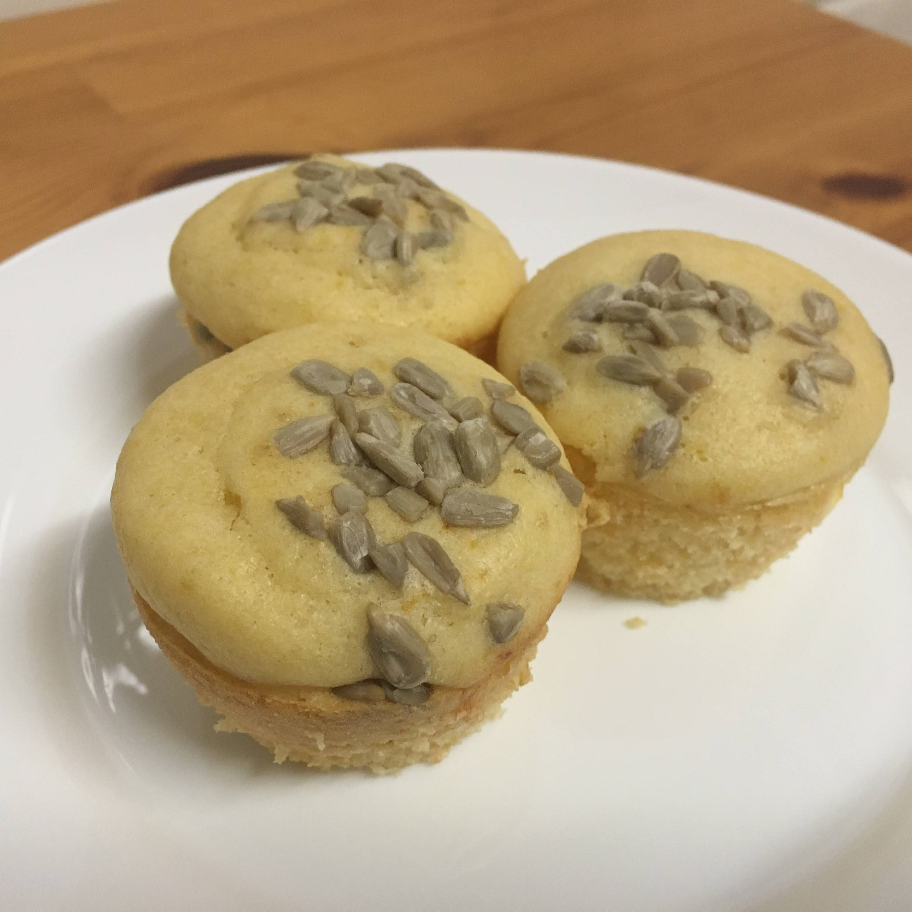

Muffin de cream cheese e manjericão

Ingredientes
Massa
- 100 g de leite
- 100 g de farinha de trigo
- 10 g de açúcar
- Sal QB
- 30 g de manteiga derretida
- 1 ovo
- 6 g de fermento químico
Recheio e finalização
- cream cheese QB
- Folhas de manjericão QB
- Sementes de girassol QB
Modo de preparo
Massa
- Misturar todos os ingredientes.
Recheio e finalização
- Em forminhas untadas e enfarinhadas ou de papel, colocar um pouco da massa, rechear com uma porção de creme chesse e uma folha de manjericão e por fim cobrir com mais um pouco de massa.
- Salpicar sementes de girassol por cima dos muffins.
- Assar a 180º C por aproximadamente 15 minutos.
Observação
Rende 8 muffins, aproximadamente.
Pode-se rechear com fiambre, franco desfiado, palmito, ervas...
Receita da Cambury.